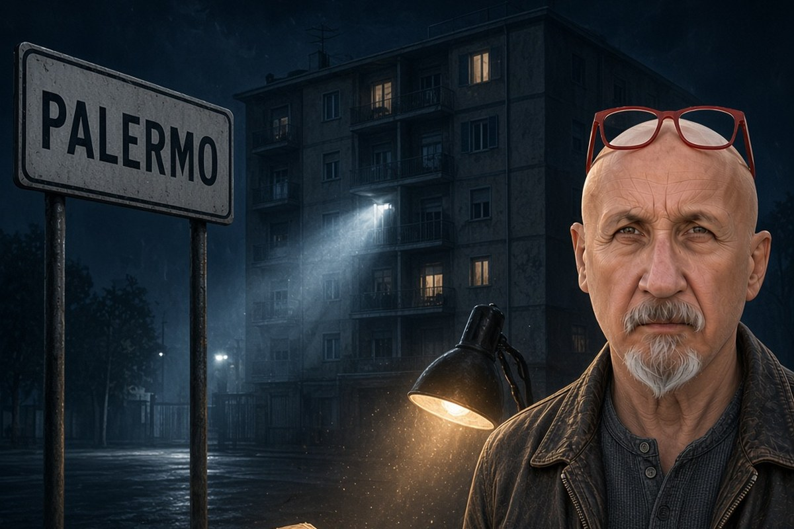

Franco Zanghì
Cronaca · 14 ottobre 2026
Le 24 case della famiglia Pignatone e l'archiviazione che chiude tutto

Un decreto di 644 pagine del gip di Caltanissetta muove rilievi pesantissimi a Giuseppe Pignatone e nello stesso momento archivia: il reato ipotizzato era prescritto prima ancora che l'indagine cominciasse.
di Franco Zanghì
In una palazzina di via Turr, a Palermo, tra il 1980 e il 1983 furono firmati 24 atti di compravendita. Da una parte c'era una società immobiliare i cui tre soci sono stati poi condannati tutti per mafia, e non erano comparse: un capo mandamento, un reggente di mandamento e uno dei costruttori del sacco di Palermo. Dall'altra c'era la famiglia di un magistrato dello Stato, in quegli anni sostituto procuratore a Palermo: Giuseppe Pignatone.
Chi vendeva
I tre soci si chiamano Salvatore Buscemi, Francesco Bonura e Vincenzo Piazza, e la società si chiamava Immobiliare Raffaello. Buscemi, dopo la morte di Salvatore Inzerillo, prese il comando della famiglia mafiosa di Passo di Rigano, uomo dei corleonesi, e nel 2008 è stato condannato in via definitiva per concorso nelle stragi di Capaci e di via D'Amelio. Bonura, suo cognato, reggeva con lui il mandamento ed è stato condannato per mafia più volte. Piazza è uno dei costruttori del sacco di Palermo, condannato anche lui. E il fratello di Salvatore Buscemi, Antonino, in quegli stessi anni portava i soldi di Cosa nostra dentro la Calcestruzzi del gruppo Ferruzzi.
Quei 24 atti oggi stanno dentro un provvedimento di 644 pagine, depositato il 3 ottobre 2026 dal giudice per le indagini preliminari di Caltanissetta, Santi Bologna. E non è un atto d'accusa: è un'archiviazione. Il giudice scrive cose durissime su uno dei magistrati antimafia più conosciuti d'Italia, e insieme chiude tutto.
C'è un dettaglio che il procuratore di Caltanissetta, Salvatore De Luca, ha raccontato in commissione antimafia. Prima di via Turr, Pignatone aveva vissuto dai 14 ai 27 anni in una palazzina di via Uditore dove, su 14 appartamenti, 8 erano occupati dalla famiglia Piazza. La stessa che poi avrebbe venduto.
Che cosa contesta il giudice
Nel 1992 Pignatone era sostituto procuratore a Palermo, collaboratore stretto del procuratore capo Pietro Giammanco. E uno dei fascicoli di quella procura riguarda i rapporti tra Antonino Buscemi, Francesco Bonura e il gruppo Ferruzzi di Raul Gardini.
I rilievi sono quattro. Il primo è che non si è astenuto dall'indagine sugli appalti della Sirap, società partecipata dall'Espi, l'ente regionale allora presieduto da suo padre, Francesco Pignatone. Il secondo è che non ha disposto perquisizioni che il materiale del Ros dei Carabinieri avrebbe consentito, e tra i possibili destinatari il decreto indica proprio Antonino Buscemi, la cui posizione fu poi archiviata in tre righe. Il terzo riguarda una sequenza di atti che il giudice definisce anomala: due persone interrogate come indagate senza essere iscritte nel registro, una richiesta di arresto per una di loro presentata prima dell'iscrizione, una richiesta di archiviazione per tutti depositata mentre quella misura era pendente. Il quarto è il più sgradevole: secondo il giudice, davanti al Consiglio superiore della magistratura, nel 1992, Pignatone non ha detto la verità.
La casa
Secondo una consulenza disposta dalla procura, per l'appartamento di via Turr intestato alla moglie fu pagato un prezzo inferiore di circa un terzo a quello di mercato. Pignatone, in una memoria difensiva, ha ammesso due cose: che quell'appartamento in realtà lo aveva comprato per sé, e che una parte del prezzo l'aveva versata in nero, 20 milioni di lire, al capo mandamento Salvatore Buscemi. Si potrebbe dire che l'ammissione del nero serva proprio a far sparire lo sconto. La procura ci è arrivata e ha chiuso la strada: o il prezzo era troppo basso, e il problema è lo sconto, oppure una parte è uscita dall'atto, e resta l'ammissione di essersi prestati a far evadere il fisco a una società di quel genere. Non ci sono terze vie. Un riscontro dalla parte venditrice, però, non risulta: quella è una dichiarazione dell'interessato.
Sulla gestione complessiva di mafia e appalti il giudice scrive che c'è stato un peggioramento progressivo, e indica in Pignatone il comune denominatore.
Il muro
Niente di tutto questo diventerà un processo. Il reato ipotizzato era il favoreggiamento, ed era già prescritto quando l'indagine è nata. Le difese avevano eccepito proprio questo, che su un reato prescritto non si indaga. Il giudice ha respinto la tesi: l'interesse pubblico ad accertare le cause delle stragi del 1992 viene prima del diritto all'oblio degli indagati. Una scelta dichiarata: accertare anche senza poter punire.
Ma quell'accertamento finisce dentro un atto che chiude. Non c'è un dibattimento, non c'è una controprova, non c'è nemmeno un provvedimento da impugnare, perché l'archiviazione è formalmente a favore di chi la riceve. Gioacchino Natoli ha diffuso un comunicato dicendo di poter dimostrare la propria estraneità ad accuse rivolte pubblicamente, senza contraddittorio. Pignatone, dopo l'audizione del procuratore in commissione, ha fatto sapere di essere profondamente deluso e addolorato. Roberto Scarpinato, mai indagato e nello stesso decreto definito autore di attività depistante, ha protestato per lo stesso motivo. Tre posizioni diverse, la stessa obiezione. E Pignatone è in pensione dal 2019: nemmeno la strada disciplinare è percorribile.
Non dico che Pignatone abbia favorito qualcuno: il giudice che ha letto tutte le carte scrive il contrario, e archivia. Dico un'altra cosa. Un sistema che impiega 34 anni per guardare dentro casa propria, e ci riesce solo quando non può più decidere nulla, non si è corretto. Si è raccontato dopo. E il prezzo lo pagano due volte le stesse persone: chi viene descritto così non potrà mai smentirlo in un'aula, e chi aspetta da 34 anni di sapere perché sono morti Falcone e Borsellino si ritrova 644 pagine che non portano da nessuna parte.
Resta la contraddizione, ed è nel testo del giudice. Nello stesso provvedimento si legge che quelle anomalie non sempre rientrano in comportamenti soltanto negligenti o inesperti, e si legge che non c'è niente da fare. Se davvero non si trattava solo di negligenza, chi doveva accorgersene mentre accadeva? E perché, in 34 anni, nessuno l'ha fatto?
Fonti
- Il Foglio, il contenuto del decreto sugli acquisti immobiliari e sulle anomalie, 6 ottobre 2026
- PalermoToday, il decreto di archiviazione per Natoli e Pignatone
- Giornale di Sicilia, il giudice sui diritti di Natoli e Pignatone, 6 ottobre 2026
- Il Fatto Quotidiano, le versioni di De Luca, Patronaggio, Lo Forte e Pignatone sulla riunione del 1992, 6 ottobre 2026
- Il Giornale, l'archiviazione del gip di Caltanissetta e il passaggio su Scarpinato
Il numero degli immobili è quello indicato dal decreto; il procuratore di Caltanissetta, in commissione antimafia, ne ha contati 26 partendo dal 1978 e includendo box, cantine e negozi. Alla data di pubblicazione non risulta una replica pubblica di Giuseppe Pignatone successiva al deposito del decreto. Le indagini sulle stragi del 1992 restano aperte.